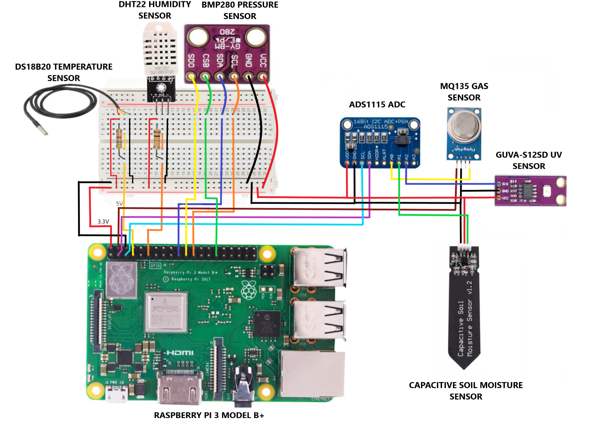
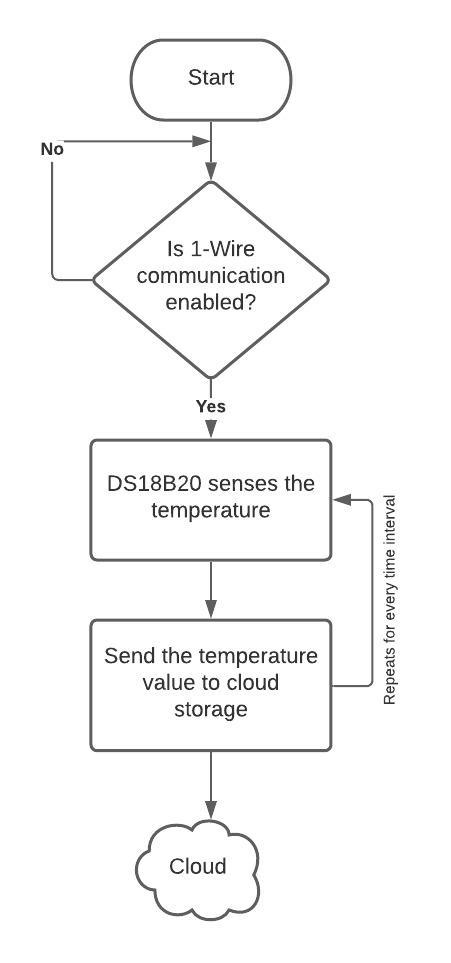
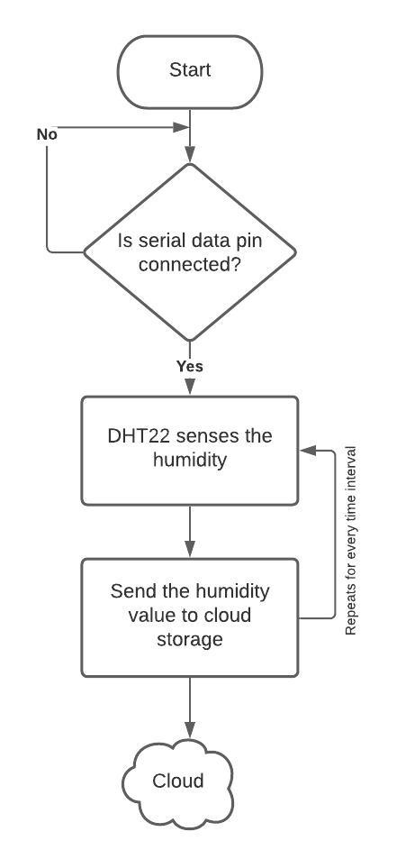
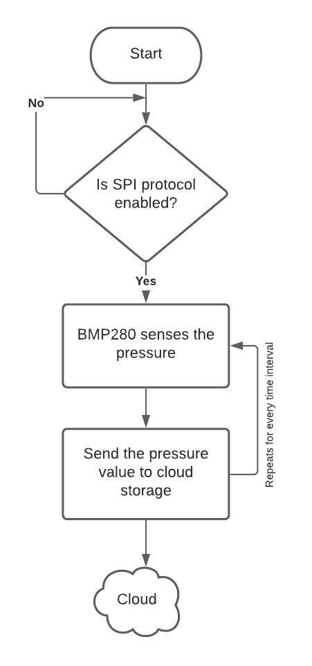
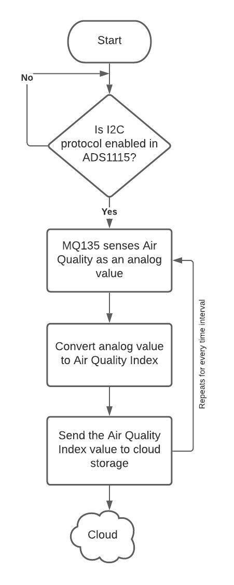
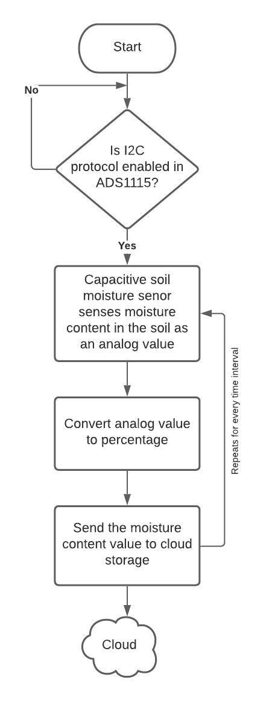
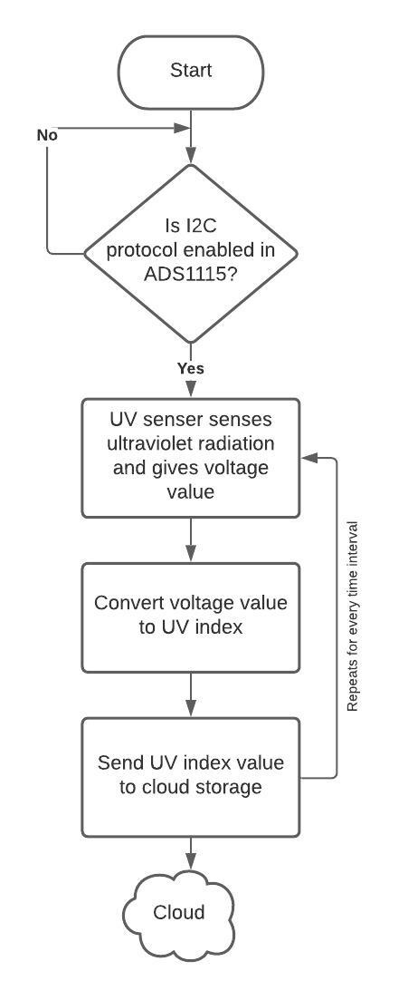
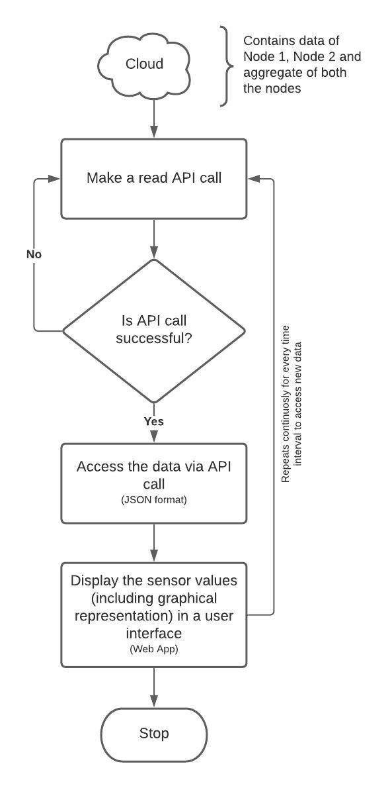

Implementation

Interfacing DS18B20 Temperature sensor with Raspberry Pi
The DS18B20 is a waterproof sensor, that can provide temperatures over a one-wire interface.
The waterproof feature of the sensor makes it perfect for using in wet environment.
The sensor looks like a very long cord with a thick part on one end. If the sensor is considered to
be a plain version without wiring and waterproofing, then it looks exactly like a transistor.
The sensor is pretty accurate being within 0.05°C of the actual temperature. It can handle temperatures
of up to 125°C (260°F), but it’s recommended to keep it below 100°C (210°F). The device also has an
onboard analog to digital converter, so it can be easily hook it up to a digital GPIO pin on the Pi.
Flowchart

Since the DS18B20 sensor communicates through 1-Wire method, enable the one wire communication on Raspberry Pi. The basis of 1-Wire technology is a serial protocol using a single data line plus ground reference for communication.
To enable 1-Wire in Raspberry Pi, in the Command prompt sudo nano /boot/config.txt command is used to open the config file. Inside the config file line dtoverlay=w1-gpio is added and file is saved.
The DS18B20 sensor senses the temperature and gives a raw value which is then converted to a readable value dividing by 1000.
The obtained temperature value is sent to the cloud storage by using write API command.
After a certain time interval, the sensor again senses the temperature and sends the data to a cloud storage and this process repeats continuously.
Enabling the 1-Wire communication is a one-time process, even if the Raspberry reboots the configuration will be saved.
Interfacing DHT22 Humidity sensor with Raspberry Pi
The DHT22 is a versatile and low-cost humidity sensor that can also calculate the temperature of an area.
The sensor has a relatively long transmission distance, allowing the sensor to transmit data through
wires up to 20m away from the Raspberry Pi. In addition, the DHT22 is a digital sensor with an
inbuilt analog to digital converter. The biggest downside to the DHT11 and DHT22 sensors is
that they are quite slow sensors. They have a sampling rate of once every second for the DHT11
and once every 2 seconds for the DHT22.
Flowchart

To interact or communicate with DHT22 sensor “Adafruit_DHT” library is used. The library easily retrieves the temperature and humidity from the sensor with a few lines of python code.
The “read_retry” function is used to retrieve the data continuously from the sensor.
The obtained humidity value is sent to the cloud storage by using write API command.
After a certain time interval, the sensor again senses the humidity and sends the data to a cloud storage and this process repeats continuously.
Interfacing BMP280 Pressure sensor with Raspberry Pi
The BMP280 is a Piezo-resistive pressure sensor technology featuring high EMC robustness,
high accuracy and linearity and long-term stability. The sensor module is housed in an extremely
compact 8-pin metal lid Land Grid Array (LGA) package. Its small dimensions and its low power
consumption of 2.7µA @ 1Hz allow the implementation in battery driven devices such as mobile phones,
GPS modules or watches. The sensor operates at lower noise, supports new filter modes and a Serial
Peripheral Interface (SPI) within a footprint 63% smaller than the BMP180.
Flowchart

In order to use BMP280 module, SPI (Serial Peripheral Interface) protocol should be enabled on the Raspberry Pi with the help of SDA (Serial Data) and SCL (Serial Clock) lines as it is not enabled by default.
SDA line is used for the master and slave to send and receive data and SCL line carries the clock signal.
The obtained pressure value is sent to the cloud storage by using write API command.
After a certain time interval, the sensor again senses the pressure and sends the data to a cloud storage and this process repeats continuously.
Interfacing MQ135 Gas sensor with Raspberry Pi using ADS1115 (ADC)
The MQ-135 Gas sensors are used in air quality control equipments and are suitable for detecting or measuring
of NH3, NOx, Alcohol, Benzene, Smoke, CO2. The MQ-135 sensor module comes with a Digital Pin which makes this
sensor to operate even without a microcontroller and that comes in handy when you are only trying to detect one
particular gas. If you need to measure the gases in PPM the analog pin need to be used. The analog pin is TTL
driven and works on 5V and so can be used with most common microcontrollers.
The ADS1115 is an analog to digital converters that are easy to use with the Raspberry Pi using its I2C
communication bus. The ADS1115 is a 12-bit ADC and is a higher precision 16-bit ADC with 4 channels.
In addition, it has a programmable gain from 2/3x to 16x in order to amplify small signals and read them
with higher precision. The ADS1115 uses I2C communication protocol to read analog values. Before wiring
the ADC to the Pi, I2C has to be enabled on the Raspberry Pi using raspi-config.
Flowchart

Since raspberry pi does not have an ADC, external ADC is used to interface MQ135 with raspberry pi with the help of I2C protocol.
MQ135 provides analog value of air quality, so it is converted to a readable value which is Air Quality Index (AQI) with help of suitable equations.
The obtained AQI value is sent to the cloud storage by using write API command.
After a certain time interval, the sensor again senses the air quality and sends the data to a cloud storage and this process repeats continuously.
Interfacing Capacitive Soil Moisture sensor with Raspberry Pi using ADS1115 (ADC)
A capacitive soil moisture sensor works by measuring the changes in capacitance caused by the changes in the
dielectric. Capacitive measuring basically measures the dielectric that is formed by the soil and the water
is the most important factor that affects the dielectric. Capacitive measuring has some advantages,
it not only avoids corrosion of the probe but also gives a better reading of the moisture content of
the soil as opposed to using a resistive soil moisture sensor. The capacitance of the sensor is measured
by means of a 555 based circuit that produces a voltage proportional to the capacitor inserted in the soil.
We then measure this voltage by use of an Analog to Digital Converter which produces a number that we can
then interpret as soil moisture.
Flowchart

Capacitive soil moisture sensor requires analog output pin, so it is interfaced with raspberry pi using ADS1115 which is an ADC.
Since the output analog value has a large range, it has to be mapped to a smaller range and convert value as a percentage.
The obtained moisture value is sent to the cloud storage by using write API command.
After a certain time interval, the sensor again senses the soil moisture and sends the data to a cloud storage and this process repeats continuously.
Interfacing GUVA-S12SD UV sensor with Raspberry Pi using ADS1115 (ADC)
The GUVA-S12SD UV Sensor chip is suitable for detecting UV radiation in sunlight. It can be used in any application
where we want to monitor for the amount of UV light and is simple to connect to any microcontroller.
The module, with a typical UV detection wavelength of 200 – 370nm, outputs a calibrated analog voltage
which varies with the UV light intensity. So, basically all we need to do is connect this to an ADC input
and read in the value. This value ties in with the UV index.
Flowchart

Since UV sensor gives analog output as voltage value, it is mapped to a readable range (0 to 11) and then this value is sent to the cloud storage by using write API command.
After a certain time interval, the sensor again senses the ultraviolet radiation and sends the data to a cloud storage and this process repeats continuously.
DATA ACCESS IN CLOUD STORAGE
The weather parameters captured from sensors are stored in a ThingSpeak cloud. The cloud includes data from node 1, node 2 and average of both the nodes.
Each node has different channel in the cloud to store data and this data can be accessed by using read API call with the help of unique channel ID. Here each channel includes six fields which contain different sensor values and also a location field which contains coordinate value of the node.
To get averaged data of the two nodes, MATLAB analysis is used in the ThingSpeak platform which uses MATLAB code to average the data. Here read API call is made for the two nodes to get current data and then the values are averaged and sent to a new channel so that averaged data can be accessed easily.
To display the sensor values in a user interface, web application is built with the help of Expo platform which is an open-source platform for making universal native apps for Android, iOS, and the web with JavaScript and React.
Since ThingSpeak platform contains plots of real-time sensor values, the plot can be displayed in the web application by using iframe tag of the plot. An IFrame (Inline Frame) is an HTML document embedded inside another HTML document on a website. The IFrame HTML element is often used to insert content from another source.
The location (latitude and longitude) of the nodes is displayed in the web application by using react-leaflet which is a light-weight, open-source mapping library that utilizes OpenStreetMap. And to get the complete address from latitude and longitude coordinates TomTom Reverse Geocoding API is used.
In the user interface by default averaged data and plots will be displayed and also there is an option to view data of the individual nodes. The data from individual nodes as well as averaged data can be downloaded in csv format. The excel sheet contains columns such as Time (IST) at which the data has been pushed to the cloud and sensor values such as Temperature (°c), Humidity (%), Pressure (hPa), Soil moisture (%), UV index and Air quality index (ppm).
Flowchart
